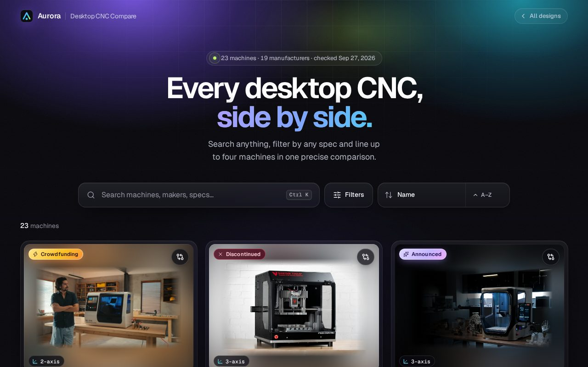
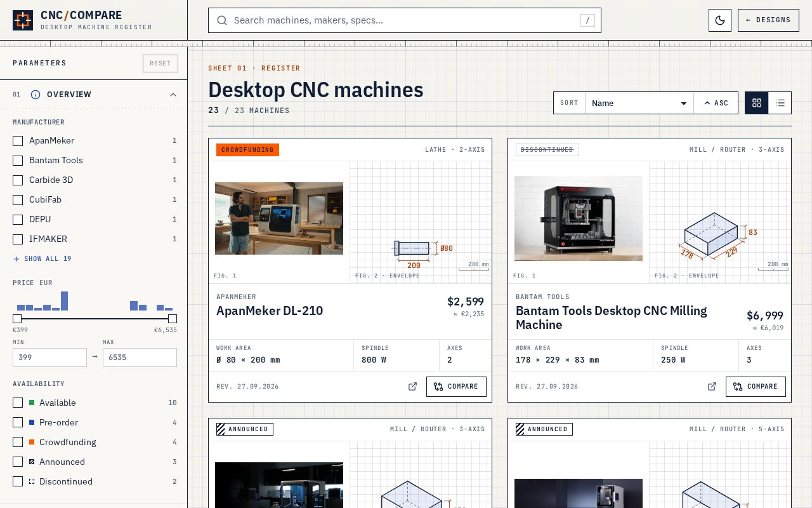
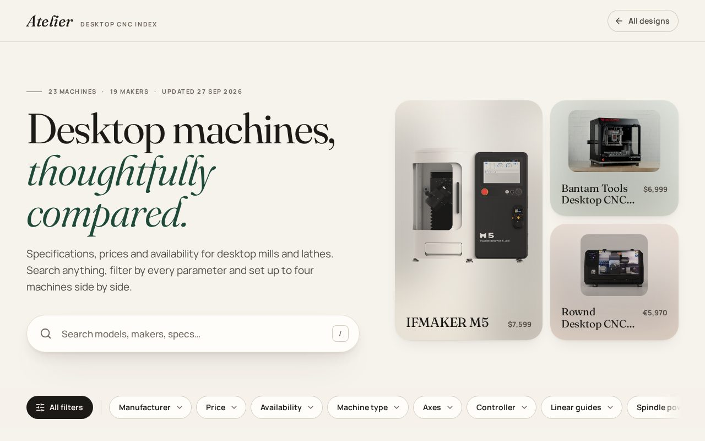

Every desktop CNC machine in one place: search, filter by any spec and compare up to four side by side. Same data, three designs. Pick the one you like.

Dark glass, aurora gradients and a command-bar search.

Technical spec sheets, to-scale work envelopes and a parametric sidebar.

Warm editorial layout with big imagery and serif typography.